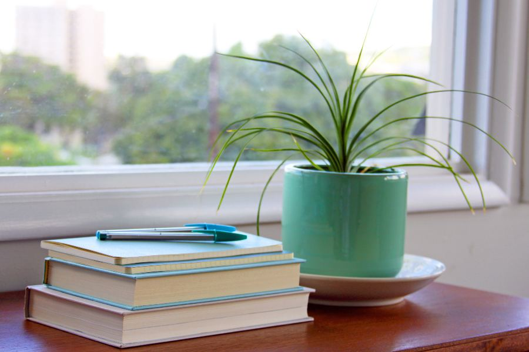
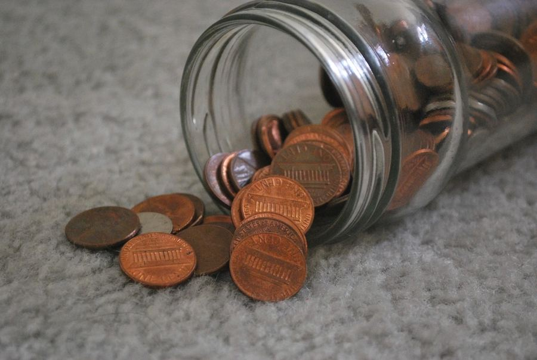

花最少的力氣，換最多的好日子。
一百九十件花得少、換得多的小事，關於健康、時間、心力與金錢。每一件都附上出處，也誠實告訴你證據有多可靠。
人生沒有標準答案，但有些選擇，早就有人替你算過了。繫上安全帶的兩秒鐘、早一點睡的那一小時、少喝一杯全糖飲料、少滑一次手機——這些不起眼的小事，日積月累，會長成很不一樣的人生。
此刻，你在煩惱什麼？
選一個最接近你心情的字，我們陪你找到可以先讀的篇章。
不用想太久，第一個浮上心頭的字就是了。
最近總是好累，提不起勁
累，不一定是你不夠努力，可能只是力氣花錯了地方。
可以先讀這幾篇

第 3 篇把力氣留給重要的事為什麼總是很累，卻好像什麼都沒做？- 第 22 篇怎麼放鬆整理中・真正能讓人恢復的休息是什麼？
- 第 2 篇別讓身體慢慢垮掉每天的菸酒、飲食和睡眠，正在替身體記什麼帳？
想把身體顧好，卻不知從何開始
先從最便宜、證據最紮實的幾件小事做起就好。
可以先讀這幾篇
- 第 1 篇別太早離開哪些花小錢的事，能讓我們活得久一點？
- 第 2 篇別讓身體慢慢垮掉每天的菸酒、飲食和睡眠，正在替身體記什麼帳？
- 第 24 篇看病整理中・怎麼看病才不白跑、不花冤枉錢？
- 第 6 篇反面清單整理中・哪些錢和力氣，其實花了也沒用？
錢總是莫名其妙就不見了
錢很少是一次花掉的，通常是一點一點漏掉的。
可以先讀這幾篇

第 5 篇別讓錢白白流走錢是怎麼一點一點漏掉的？- 第 7 篇沒錢的時候怎麼活整理中・手頭很緊的時候，可以先抓住什麼？
- 第 6 篇反面清單整理中・哪些錢和力氣，其實花了也沒用？
時間永遠不夠用
時間不會變多，但可以少被偷走一點。
可以先讀這幾篇
- 第 4 篇把時間還給自己時間都去哪了？怎麼一點一點拿回來？
- 第 3 篇把力氣留給重要的事為什麼總是很累，卻好像什麼都沒做？
- 第 23 篇學什麼技能划算整理中・時間有限，該先學什麼？
家裡有長輩或孩子要照顧
照顧別人之前，也記得替自己留一點力氣。
可以先讀這幾篇
- 第 17 篇家裡有長輩整理中・怎麼照顧爸媽，也照顧好自己？
- 第 18 篇養孩子划不划算整理中・養一個孩子，要付出些什麼？
- 第 20 篇剛出生的孩子怎麼帶整理中・新手爸媽最該先知道的事。
- 第 30 篇上學以後的孩子整理中・孩子上學之後，父母可以做些什麼？
擔心被騙，怕惹上麻煩
大部分的麻煩，事前多問一句就能避開。
可以先讀這幾篇
- 第 8 篇別把自己賠進去整理中・借錢、擔保、被騙，怎麼不讓自己受傷？
- 第 9 篇一般人容易踩的法律紅線整理中・哪些事一不小心就違法了？
- 第 14 篇帳號與資訊安全整理中・怎麼保護自己的帳號和個人資料？
- 第 13 篇緊急情況整理中・意外發生的那幾分鐘，該先做什麼？
站在人生的岔路口
沒有完美的選擇，但可以先把帳算清楚。
可以先讀這幾篇
- 第 31 篇十八歲之後有哪幾條路整理中・升學、工作、出國，路可以怎麼走？
- 第 23 篇學什麼技能划算整理中・時間有限，該先學什麼？
- 第 12 篇創業與做生意整理中・想自己當老闆，先算哪幾筆帳？
- 第 32 篇出國留學整理中・出國念書，值得嗎？
剛經歷了很大的打擊
先撐過今天就好。這裡有幾件事，可以陪你慢慢走。
可以先讀這幾篇
- 第 29 篇遭遇重大打擊之後整理中・天塌下來的時候，先撐住哪幾件事？
- 第 16 篇得了慢性病之後怎麼活整理中・確診之後，日子要怎麼好好過下去？
- 第 25 篇親人離開以後要辦什麼整理中・最難過的時候，還有哪些事要處理？
- 第 33 篇身障之後怎麼活整理中・身體改變之後，生活可以怎麼重新開始？
三十四篇，慢慢讀
從身體、心力、金錢，到家人與人生的岔路。可以依主題挑選，也可以直接搜尋。
顯示 34 篇
- 別太早離開哪些花小錢的事，能讓我們活得久一點？
- 別讓身體慢慢垮掉每天的菸酒、飲食和睡眠，正在替身體記什麼帳？
- 把力氣留給重要的事為什麼總是很累，卻好像什麼都沒做？
- 把時間還給自己時間都去哪了？怎麼一點一點拿回來？
- 別讓錢白白流走錢是怎麼一點一點漏掉的？
-
反面清單哪些錢和力氣，其實花了也沒用？
-
沒錢的時候怎麼活手頭很緊的時候，可以先抓住什麼？
-
別把自己賠進去借錢、擔保、被騙，怎麼不讓自己受傷？
-
一般人容易踩的法律紅線哪些事一不小心就違法了？
-
談戀愛和結婚划不划算走進一段關係前，該想清楚什麼？
-
工程師和技術人容易踩的紅線寫程式、做技術，也可能觸法嗎？
-
創業與做生意想自己當老闆，先算哪幾筆帳？
-
緊急情況意外發生的那幾分鐘，該先做什麼？
-
帳號與資訊安全怎麼保護自己的帳號和個人資料？
-
租屋與買房租屋還是買房，怎麼選比較不吃虧？
-
得了慢性病之後怎麼活確診之後，日子要怎麼好好過下去？
-
家裡有長輩怎麼照顧爸媽，也照顧好自己？
-
養孩子划不划算養一個孩子，要付出些什麼？
-
在職、離職與職災上班族一定要知道的權益有哪些？
-
剛出生的孩子怎麼帶新手爸媽最該先知道的事。
-
出國旅行與海外安全出門在外，怎麼平安回家？
-
怎麼放鬆真正能讓人恢復的休息是什麼？
-
學什麼技能划算時間有限，該先學什麼？
-
看病怎麼看病才不白跑、不花冤枉錢？
-
親人離開以後要辦什麼最難過的時候，還有哪些事要處理？
-
做一個網站或平台上線之前，有哪些法律和責任？
-
懷孕和生產從懷孕到生產，哪些事值得提早準備？
-
別為了外表把身體搞壞變美之前，先確認不會受傷。
-
遭遇重大打擊之後天塌下來的時候，先撐住哪幾件事？
-
上學以後的孩子孩子上學之後，父母可以做些什麼？
-
十八歲之後有哪幾條路升學、工作、出國，路可以怎麼走？
-
出國留學出國念書，值得嗎？
-
身障之後怎麼活身體改變之後，生活可以怎麼重新開始？
-
家裡的常備藥別吃出事家裡那些藥，你真的吃對了嗎？
沒有找到相符的篇章，換個詞試試看。
今天，抽一則小提醒
不知道從哪裡開始？讓一支籤替你挑一件。
這份指南的三個約定
每一條都有出處
醫學研究、官方統計或法規條文，都附上原始來源，讓你可以自己查證。
誠實說明證據
證據紮實、尚可，或只是經驗共識，都標得清清楚楚；研究之間有爭議的，也一併寫出來。
A證據紮實B證據尚可C經驗共識有爭議
不要求你全部做到
人生不是考試。挑幾件最划算的，先做就好。
- 條建議
- 190
- 個篇章已整理
- 5
- 條證據紮實
- 104
- 筆原始出處
- 587